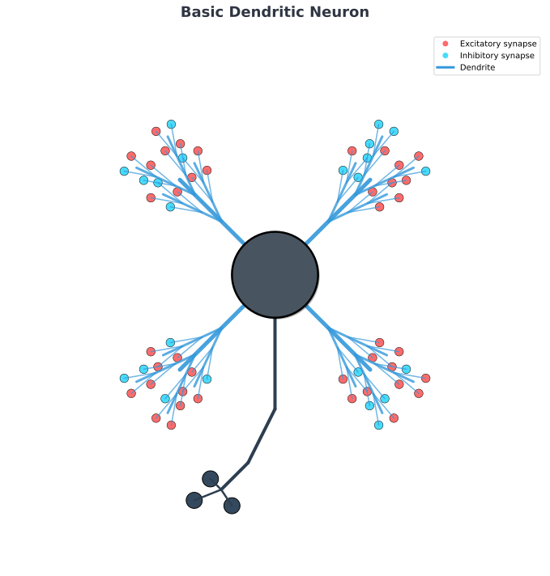
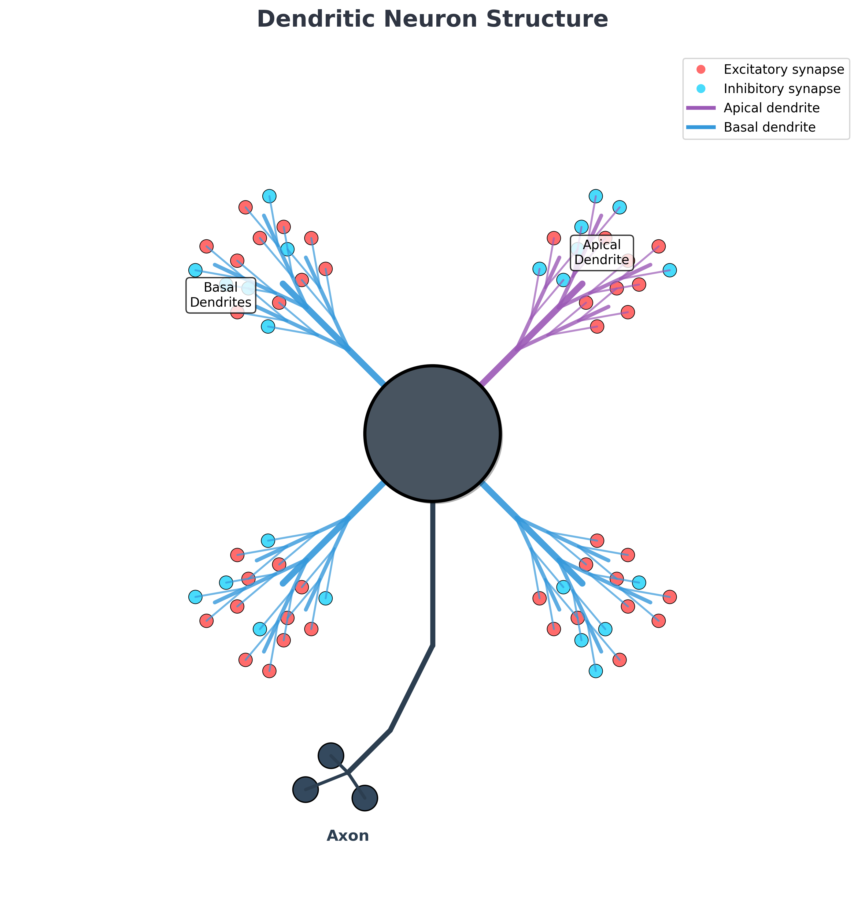

Dendritic Modeling Framework
A PyTorch framework for biologically-inspired neural networks with dendritic computation


Figure 1 Dendritic neuron structure with excitatory and inhibitory synapses, the biological inspiration for the framework
Note
All diagrams and placeholder images in the documentation are generated automatically by the helper script docs/make.py.
If you update the code that produces a new visual or change the styling, remember to rerun:
``bash
python docs/make.py
``
before rebuilding the documentation (make html or equivalent). This guarantees that the HTML/PDF output always ships with the latest, high-resolution figures (both PNG and SVG). Vector .svg versions are preferred for crisp rendering at any zoom level.
Overview
The Dendritic Modeling Framework implements neural networks inspired by the dendritic computations in biological neurons. Key features include:
Shunting Inhibition: Divisive normalization through E/(E+I+ε) computation
Multi-layer E/I Networks: Separate excitatory and inhibitory populations
Flexible Architectures: Support for MLPs, CNNs, and Vision Transformers
Biological Plausibility: Branching patterns, synaptic constraints, and Dale’s principle
Comprehensive Analysis: Information theory, ablation studies, and visualization tools
Getting Started
User Guide
API Reference
Advanced Topics
Key Concepts
Shunting Inhibition
The core computation implements divisive normalization:

Figure 9 Shunting inhibition provides gain control and normalization
Dendritic Branches
Neurons have hierarchical dendritic branches:


Figure 10 Dendritic branches receive excitatory and inhibitory inputs
Quick Example
from dendritic_modeling.models import DendriticClassifier
# Create a dendritic network for MNIST
model = DendriticClassifier(
network_config={
"name": "ExcitationInhibitionNetwork",
"params": {
"input_dim": 784,
"n_layers": 2,
"n_excitatory": [100, 10],
"n_inhibitory": [20, 0],
"n_branches": [10, 5]
}
},
num_classes=10
)
# Train and evaluate
trainer.fit(model, train_loader, val_loader)
accuracy = trainer.test(model, test_loader)
Citing
If you use this framework in your research, please cite:
@software{dendritic_modeling,
title = {Dendritic Modeling Framework},
author = {Your Lab},
year = {2024},
url = {https://github.com/yourusername/dendritic-modeling}
}